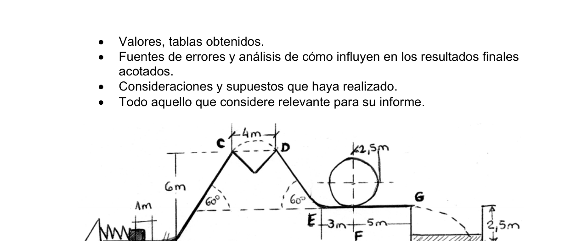
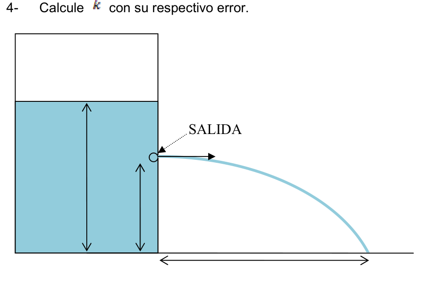

Torricelli Bernoulli Fluid Outflow
PE41. Ciudad de Salta. Azul. Experimental I La realidad tiene la última palabra… Introducción A fin de explicar fenómenos que ocurren en la realidad, la física construye modelos bajo ciertas suposiciones y consideraciones. Recordemos que uno de los objetivos de un modelo en física es predecir el valor de una magnitud física. Cuando un fluido escapa por un orificio practicado en un recipiente, la velocidad con que sale del mismo se puede calcular fácilmente en términos de la altura que se encuentra inicialmente el agua. Por otra parte si se conoce la altura de donde sale el agua con respecto a la base del recipiente y la distancia horizontal que recorre el chorro se puede calcular también sin problema la velocidad de salida. Sin embargo, estas velocidades no coinciden en la realidad. Objetivo El objetivo de la práctica es encontrar la razón de estas dos velocidades que discrepan. Material disponible
- Un contenedor cilíndrico plástico con orificios equidistantes y escalados.
- Agua.
- Una Manguera.
- Un clavo.
- Cinta adhesiva.
- Regla
Actividad experimental De un contenedor con agua se deja salir un chorro horizontal. De acuerdo a la ecuación de Bernoulli, se cumpliría que:
donde y son las presiones en los puntos 1 y 2 respectivamente, , , y y son las velocidades en los puntos 1 y 2 respectivamente. Por otro lado, el movimiento bidimensional de una partícula líquida perteneciente a un chorro líquido (agua) se regiría acertadamente por las siguientes ecuaciones:
En un caso ideal, los resultados de las velocidades obtenidos usando cualquiera de los modelos deberían ser iguales entre sí, sin embargo, este no es el caso. La discrepancia en las velocidades podría medirse en la forma de un cociente:
donde es la velocidad predicha por las ecuaciones de cinemática, y la velocidad predicha por la ecuación de Bernoulli. Procedimiento experimental 1- Proponga una explicación a la discrepancia entre y , relacionada con las propiedades del líquido en cuestión. 2- Haciendo uso de las consideraciones y simplificaciones pertinentes demostrar:
3-
Mida
y
todas las veces que crea conveniente, para distintos
valores de
, y con los errores correspondientes.
4-
Calcule
con su respectivo error.
Experimental II
Oootra forma de medir el índice de refracción del agua.
Objetivo
Medir el índice de refracción del agua.
Material disponible
- Recipiente transparente con agua, que tiene un par de caras paralelas, y otro par de caras no paralelas.
- Un puntero de láser de He_Ne.
- Una pantalla.
- Pequeño espejo para alinear.
- Cinta métrica. Procedimiento experimental
- Se deberá ubicar el recipiente, el láser y la pantalla como lo indica la Fig. 1, procurando que: a. El haz de luz y la cara de entrada en el recipiente sean perpendiculares: Como sabemos, al incidir el rayo de luz sobre vidrio parte de la luz se refleja y parte se refracta. Al hacer que el haz de láser reflejado en la cara SALIDA
coincida con el haz incidente nos aseguramos de que la superficie y el rayo láser serán perpendiculares. b. El haz de láser y la pantalla sean perpendiculares: Se puede usar el mismo procedimiento de más arriba sosteniendo un espejo o pieza de vidrio contra la pantalla. Lo que se recomienda es dejar ubicado primero el láser respecto a la pantalla. Para ello colocamos la pantalla en posición (pegada a una pared, por ejemplo) y sostenemos temporalmente un espejo contra ella. Encendemos el láser y lo fijamos tal que el haz reflejado sobre el espejo coincida con el incidente. Hecho ésto colocamos el recipiente en posición entre el láser y la pantalla mediante el mismo principio (ver Figura 1). Cuando tengamos todo en posición marcamos en la pantalla el punto (P) de incidencia del láser. Lean el resto del texto, no se apuren todavía a llenar con agua el recipiente.
Haz de láser Recipiente con líquido Pantalla θ θ β L d θ P Normal Haz de Recipient Pantalla 90o
90o
Figura 5. Disposición inicial vista desde arriba. Figura 6. Marcha de rayos para cuando tenemos el recipiente lleno de líquido.
Cuando llenemos el recipiente con líquido la situación sería como muestra la Figura 2.
La pared de vidrio desplaza al láser de su recorrido, y al ser delgada podemos
considerar que este desplazamiento es despreciable. Cuando el láser (cuando sale del
recipiente) pasa del agua al aire, el ángulo de incidencia es
y el ángulo de
refracción es
.
Tomamos al índice de refracción del aire como igual a 1 y según la ley de Snell:
Donde n es el índice de refracción del líquido, y:
Y a su vez
Donde
es la distancia entre el punto por donde el láser sale del recipiente y la
pantalla;
es la distancia entre el punto
marcado inicialmente y el nuevo lugar
donde incide el láser.
Parece que con conocer
,
y
calcular
es pan comido. Es fácil medir
y
,
se lo puede hacer directamente. El quid de la cuestión es conocer
, el ángulo entre
las caras del recipiente.
Para medir
vamos a usar el recipiente sin líquido (es más práctico hacer esta
medición antes de llenarlo de agua). La marcha de rayos se muestra en la figura 3.
Fácilmente vemos que se cumple la relación:
Por la que podemos calcular fácilmente . OBTENCIÓN DE
Con la medida de calcular con su correspondiente error. Haz de láser Recipiente Pantalla θ 2θ L t θ P 2θ s e Figura 7. Marcha de rayos para cuando tenemos el recipiente sin líquido.
Experimental I
Experimental II


Topic: Fluid Mechanics Metodi: Bernoulli’s Equation, Kinematic Equations, Experimental Data Analysis Competenze: Physical Reasoning, Experimental Data Analysis, Mathematical Modeling Objects: Container, Tube Fonte: Testo (PDF) — p.3
Torricelli Bernoulli Fluid Outflow
PE41. Città di Salta. Blu. Sperimentale I La realtà ha l’ultima parola. Introduzione Per spiegare i fenomeni che accadono nella realtà, la fisica costruisce modelli. In questo caso, la Commissione ha deciso di non intervenire. Ricordiamo che uno degli obiettivi di Un modello in fisica è quello di prevedere il valore di una grandezza fisica. Quando un fluido scorre attraverso un foro praticato in un recipiente, la velocità con che ne uscirà è facilmente calcolabile in termini di altezza che si iniziale trova l’acqua. Se si conosce l’altezza da cui sale il acqua rispetto alla base del recipiente e alla distanza orizzontale che attraversa il recipiente La velocità di uscita è anche facilmente calcolabile. Tuttavia, queste velocità non coincidono nella realtà. Obiettivo L’obiettivo della pratica è trovare la ragione di queste due velocità che
- Non sono d’accordo. Materiale disponibile
- Un contenitore cilindrico in plastica con fori equidistanti e scalati.
- L’acqua.
- Una Mangera.
- Un chiodo.
- Cintura adesiva.
- Regola . Attività sperimentale Da un contenitore di acqua viene uscita una jet orizzontale. Secondo la L’equazione di Bernoulli, si sarebbe riunito che:
dove y sono le pressioni dei punti 1 e 2, rispettivamente, , , y y sono le velocità rispettivamente ai punti 1 e 2. D’altra parte, il movimento bidimensionale di una particella liquida appartenente a un il gorgho liquido (acqua) sarebbe regolato correttamente dalle seguenti equazioni:
In un caso ideale, i risultati delle velocità ottenute utilizzando uno qualsiasi di questi I modelli dovrebbero essere uguali tra loro, tuttavia, questo non è il caso. La discrepanza delle velocità potrebbe essere misurata sotto forma di un coefficiente:
dove è la velocità prevista dalle equazioni cinematiche, e la velocità predetta dall’equazione di Bernoulli. Procedura sperimentale 1- Propone una spiegazione della discrepanza tra y , relativa a le proprietà del liquido in questione. 2- Usando le pertinenti considerazioni e semplificazioni dimostrare:
3-
- Mida . y Ogni volta che lo ritiene conveniente, per diversi Valori di , e con gli errori corrispondenti. 4- Calcola con il loro errore.
Sperimentale II Un altro modo di misurare l’indice di refraczione dell’acqua. Obiettivo Misurare l’indice di refraczione dell’acqua. Materiale disponibile
- recipiente trasparente con acqua, che ha un paio di facce parallele, e un altro paio di facce non parallele.
- Un laser di He_Ne.
- Un schermo.
- Un piccolo specchio per allineare.
- Cintura metrica. Procedura sperimentale
- Lo spazio del recipiente, del laser e dello schermo deve essere indicato in Figura 1. 1, cercando di: a. Il fascio di luce e la faccia di entrata nel recipiente siano perpendicolari: Come sappiamo, quando il raggio di luce incide sul vetro parte della luce viene riflette e parte si refracta. Facendo riflettere il laser sul viso SEGNERE
coincide con il raggio incidente ci assicuriamo che la superficie e il raggio laser saranno perpendicolari. b. Il laser e lo schermo siano perpendicolari: si può usare lo stesso Procedura di sopra sostenendo uno specchio o pezzo di vetro contro lo schermo. La cosa consigliata è lasciare prima il laser rispetto allo schermo. Per questo abbiamo messo la schermo in posizione (Stoccata a un muro, per l’esempio) e sostenere temporaneamente uno specchio contro di lei. Accendiamo il laser e lo fissare così che il Hai riflettuto sul specchio coincide con il Incidente. Facciamo questo. mettiamo il recipiente in posizione tra il laser e la schermo attraverso il stesso Principio (vedi Figura 1). Quando abbiamo tutto in posizione, segniamo sullo schermo. il punto (P) di incidenza del laser. Leggete il resto del testo, non state ancora in fretta di riempire l’acqua nel contenitore.
Fai il laser . Raccogliente con liquido Scattoli θ θ β L d θ P Normalmente . Fai come Ricevente Scattoli 90o
90o
Figura 5 Disposizione iniziale vista dall’alto. Figura 6. Un’orbita di fulmine per quando avremo il contenitore pieno di liquido.
Quando riempiamo il recipiente con liquido la situazione sarebbe come mostra la Figura 2. Il muro di vetro sposta il laser dal suo percorso, e essendo sottile possiamo Considerare questo spostamento disprezzabile. Quando il laser (quando esce dal contenitore) passa dall’acqua all’aria, l’angolo di incidenza è e l’angolo di La rifrazione è . Prendiamo l’indice di refraczione dell’aria come uguale a 1 e secondo la legge di Snell:
dove n è l’indice di refraczione del liquido, e:
E a sua volta
Dove? è la distanza tra il punto da cui il laser esce dal recipiente e il schermo; è la distanza tra il punto Inizialmente segnalato e il nuovo posto dove il laser colpisce. Sembra che con conoscenza , y Calcolare è pane da mangiare. È facile misurare. y , e si può farlo direttamente. Il punto è conoscere. , l’ angolo tra i volti del recipiente. Per misurare Useremo il recipiente senza liquido (è più pratico fare questo misurazione prima di riempirla di acqua). La marcia dei raggi è mostrata nella figura 3. E ’ facile vedere che si compie la relazione:
Per cui possiamo calcolare facilmente. . RICORDO DI
Con la misura di Calcolare con il suo errore corrispondente. Fai laser Raccogliente Scattoli θ 2θ L t θ P 2θ s e Figura 7. Marcia di fulmine per quando avremo il recipiente senza liquido.
Sperimentale I
Sperimentale II
Topic: Fluid Mechanics Metodi: Bernoulli’s Equation, Kinematic Equations, Experimental Data Analysis Competenze: Physical Reasoning, Experimental Data Analysis, Mathematical Modeling Objects: Container, Tube Fonte: Testo (PDF) — p.3
The Commission shall adopt delegated acts in accordance with Article 21 of Regulation (EC) No 1290/2005.
PE41. Salt City. Blue, please. Experimental I Reality has the last word. The first is the introduction. To explain phenomena that occur in reality, physics builds models. The Commission has already taken the necessary steps to ensure that the Commission is able to take the necessary measures to ensure that the Commission is able to take the necessary measures. Let us remember that one of the objectives of the A model in physics is to predict the value of a physical quantity. When a fluid escapes through a hole in a vessel, the speed with The height of the building is calculated in terms of the height of the building. initially finds water. On the other hand, if the height from which the water with respect to the bottom of the container and the horizontal distance travelled by the vessel. The output speed can also be calculated without any problem. However, These speeds don’t match in reality. The objective The aim of practice is to find the reason for these two velocities which They disagree. Available material
- A plastic cylindrical container with equidistant and escalated holes.
- It’s water.
- A Manguera.
- A nail.
- It’s the tape.
- Rule . Experimental activity A horizontal jet is released from a water container. According to the Bernoulli’s equation, it would be fulfilled that:
Where y are the pressures in points 1 and 2 respectively, , , y y are the speeds at points 1 and 2 respectively. On the other hand, the two-dimensional motion of a liquid particle belonging to a liquid jet (water) would be correctly governed by the following equations:
In an ideal case, the results of the speeds obtained using any of the models should be equal to each other, however, this is not the case. The discrepancy in speeds could be measured in the form of a coefficient:
Where is the velocity predicted by the kinematics equations, and la speed predicted by the Bernoulli equation. Experimental procedure 1- Propose an explanation for the discrepancy between y , related to the properties of the liquid in question. 2- Using the relevant considerations and simplifications demonstrate:
3- I ‘m going to . y Every time you think it’s convenient, for different people. Value of , and the corresponding errors. 4- Calculate with their respective mistakes.
Experimental II Another way to measure the refractive index of water. The objective Measure the refractive index of water. Available material
- Water-coated transparent vessel, which has a pair of parallel faces, and another pair with unparalleled faces.
- A laser pointer from He_Ne.
- A screen.
- Small mirror to align.
- It’s a tape recorder. Experimental procedure
- The container, laser and display shall be located as indicated in Fig. 1, by ensuring that: a. The beam of light and the entrance face of the container shall be perpendicular: As we know, when the light beam hits the glass part of the light is reflects and part refracts. By making the laser beam reflected on the face Get out of here .
We ‘ll make sure the surface and the lightning match the incident beam . The laser will be perpendicular. b. The laser beam and the display are perpendicular: the same can be used above procedure holding a mirror or piece of glass against the screen. What is recommended is Leave the location first laser with respect to the screen. For this we put the screen in position (stick to a wall, by (e.g. in the case of the temporarily a mirror. against her. Let ‘s turn on the . laser and we fixed it like the You ‘ve reflected on the mirror matches the The incident. I made this . We put the container in position between the laser and the screen by the same The Commission has already adopted a number of proposals. When we have everything in position we mark it on the screen. the point (P) of impact of the laser. Read the rest of the text, don’t rush to fill the container with water yet.
Make a laser . Receiving with liquid Screen θ θ β L d θ P
-
It ‘s normal . Do it . Receiving Screen 90o
90o Figure 5 is shown. Initial layout seen from above. Figure 6 is shown. Lightning march for when we have the container full of liquid.
When we fill the container with liquid the situation would be as shown in Figure 2. The glass wall displaces the laser from its path, and being thin we can. consider this displacement to be despicable. When the laser (when it comes out of the The water is transferred from the water to the air, the angle of incidence is and the angle of Refraction is . We take the air refractive index as equal to 1 and according to Snell’s law:
Where n is the refractive index of the liquid, and:
And in turn .
Where ? is the distance between the point where the laser is exiting the container and the screen; is the distance between the point Initially marked and the new location where the laser hits. It seems to me that with knowing , y calculate It’s bread eaten. It ‘s easy to measure . y , You can do it directly. The point is to know. , the angle between the faces of the container. To measure We’re going to use the liquid-free container (it’s more practical to do this) measurement before filling it with water). The speed of lightning is shown in Figure 3. We can easily see that the relationship is fulfilled:
Which we can easily calculate . The Commission has already adopted a proposal for a directive on the protection of workers’ rights.
With the measure of calculate with its corresponding error. Make a laser Receiving Screen θ 2θ L t θ P 2θ s e Figure 7 is shown. Lightning march for when we have the liquid-free container.
Experimental I
The Commission shall adopt the following implementing acts:
Topic: Fluid Mechanics Metodi: Bernoulli’s Equation, Kinematic Equations, Experimental Data Analysis Competenze: Physical Reasoning, Experimental Data Analysis, Mathematical Modeling Objects: Container, Tube Fonte: Testo (PDF) — p.3